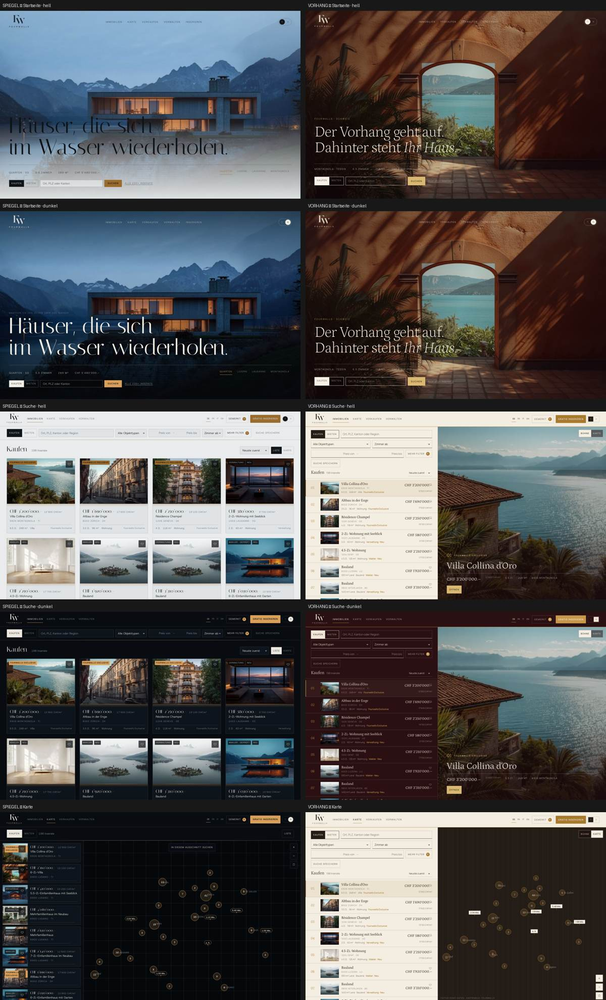
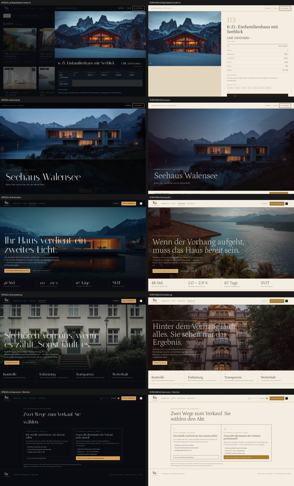

Beide Finalisten sind jetzt vollständige Portale: Suche, Ergebnisse, Karte, Standard- und Exclusive-Detail, Gratis-Inserat, Verkaufen, Verwaltung, Favoriten — hell und dunkel, Desktop und 390 px. Gleiche Daten, gleiche Logik, gleiche Routen. Unterschiedlich ist nur, wie sie zeigen.
Runde 8 ist als audit-freeze-r8 eingefroren; nichts davon wurde angefasst. Der Audit zeigte: Die Portal-Ebenen von Spiegel und Vorhang waren nahezu identisch geworden (gleiches Kartenraster, gleiche Filterleiste). Die Unterschiede lagen nur noch in Farbe, Schrift und Startseite. Das Grand Final musste deshalb vor allem eines leisten: jeder Welt ihre eigene Ergebnis-Architektur zurückgeben, ohne die DNA zu ersetzen.
Häuser, die sich im Wasser wiederholen. Nachtblau, Italiana-Display, Spiegelstreifen unter jedem Bild.
StärkenDer Vorhang geht auf. Vanille, Ochsenblut, Gold; Petrona-Display; Programmzeilen links, Bühne rechts.
Stärken

| Screen | Spiegel | Vorhang | Wer vorne liegt |
|---|---|---|---|
| Startseite | Ein Satz, ein Haus, Vier-Wege-Leiste | Torbogen, ein Satz, dieselbe Leiste | Gleichauf — beide in 5 Sekunden klar |
| Suche · Ergebnisse | Lichtkarten-Raster, 8 sichtbar | Programmzeilen + Bühne, 7–9 sichtbar + 1 gross | Vorhang (Dichte, Vergleich) |
| Karte | Dunkle Karte, Lichtpins, Liste links | Ochsenblut-Karte auf der Bühne, Zeilen links | Gleichauf — beide unverwechselbar |
| Standard-Detail | Overlay, Faktenraster, Spiegelstreifen | Zwei Spalten, Faktenliste, Bildlaufleiste | Spiegel (praktischer, schneller) |
| Exclusive | Kino-Hero, Nachtblau | Doppelvorhang, römische Kapitel, Gold | Vorhang (aussergewöhnlich statt nur gut) |
| Verkaufen · Weiche | Zwei Wege, klar | Zwei Akte, Etappen I–X | Vorhang (Reise wirkt geführter) |
| Verwaltung | Vier Ressorts, Eigentümer-Report | Vier Ressorts als Kapitel, Report als Bühne | Gleichauf |
| Mobil 390 px | Karten stapeln, Kartenmodus, Detail im Overlay | Liste bleibt stark, Bühne fällt weg | Spiegel |
| Wiederholte Nutzung | Ruhig, vertraut, wenig Bewegung | Vorhangwechsel bei jeder Auswahl — reduziert bei «Bewegung reduzieren» | Spiegel (weniger Ermüdung) |
| Ältere Nutzer | Grosse Bilder, vertrautes Muster | Ruhige Liste, hoher Kontrast, Serifenpreise | Gleichauf |
| Kriterium | Max | Spiegel | Vorhang | Begründung |
|---|---|---|---|---|
| Portal-Usability | 20 | 17 | 16 | Raster vertrauter; Master-Detail besser zum Vergleichen, aber nur auf Desktop |
| Visual / Brand | 20 | 17 | 18 | Beide eigenständig; Vorhang trägt seine DNA bis in die Ergebnisliste |
| Mobile | 15 | 13 | 12 | Spiegel verliert nichts; Vorhang verliert die Bühne |
| Dichte | 10 | 7 | 9 | 8 vs. 7–9 + Bühne; Zeilen skalieren auf 100+ besser |
| Skalierbarkeit | 10 | 8 | 8 | Gleicher Kern; beide brauchen Paginierung + Server-Clustering |
| Makler + Verwaltung | 10 | 8 | 9 | Etappen-Dramaturgie im Vorhang stimmiger, Weiche in beiden klar |
| Performance | 10 | 8 | 8 | 21 KB HTML gz, 8 KB Core, Bilder lazy; Vorhang-Bühne braucht Vorladen |
| Barrierefreiheit | 5 | 4 | 4 | Karten/Zeilen als Links, Fokusringe, Escape, reduced-motion; Kontrast Gold-auf-Vanille grenzwertig (Vorhang), Leise-auf-Nacht grenzwertig (Spiegel) |
| Total | 100 | 82 | 84 | Abstand 2 — nicht entscheidend |
| Zusatz | Spiegel | Vorhang |
|---|---|---|
| WOW | 8 | 9 |
| Unverwechselbarkeit (auch in Grau, ohne Logo) | 7 | 9 |
| Tägliche Benutzbarkeit | 9 | 8 |
Nehmen Sie Vorhang, wenn Fourwalls in erster Linie als Marke und als Exclusive-Adresse wahrgenommen werden soll, wenn Makler und Verwaltung das Herz sind und die Desktop-Suche das Hauptwerkzeug bleibt. Die Ergebnisliste ist die dichteste und vergleichbarste im ganzen Turnier, und der Vorhang ist die einzige DNA, die auch in einer Ergebnisliste noch erkennbar ist.
Nehmen Sie Spiegel, wenn das Portal vor allem täglich und mobil benutzt werden soll, wenn Ruhe im Wiederholungsgebrauch wichtiger ist als Theater, und wenn Sie eine dunkle Marke wollen, die im Hellen trotzdem funktioniert. Nichts daran muss erklärt werden.
Was beide nicht entscheidet: Preis-Eingabe, Regionalsuche, CHF/m², Quellen-Transparenz, Gratis-Inserat, Weiche, Favoriten, Tastatur — das ist in beiden gleich und gleich gut, weil es derselbe Kern ist.
fetchpriority="high", Rest lazy. Vorhang-Bühne: 960 px vorladen für die nächsten 2 Zeilen.Desktop 1440 · Mobil 375/390 · hell · dunkel · Suche · Filter · Karte · Detail · Inserieren · Verkaufen · Verwaltung · Tastatur (Karten/Zeilen als Links, Escape schliesst) · Konsole ohne Fehler · horizontaler Overflow 0 auf allen Seiten · FR/IT-Langtexte ohne Umbruchfehler · Bilder responsive (JPEG+WebP, 3 Breiten, lazy) · prefers-reduced-motion respektiert. R8 unverändert unter audit-freeze-r8.
Fourwalls Design-Turnier · Grand Final · Version final/ · Stand 2. September 2026